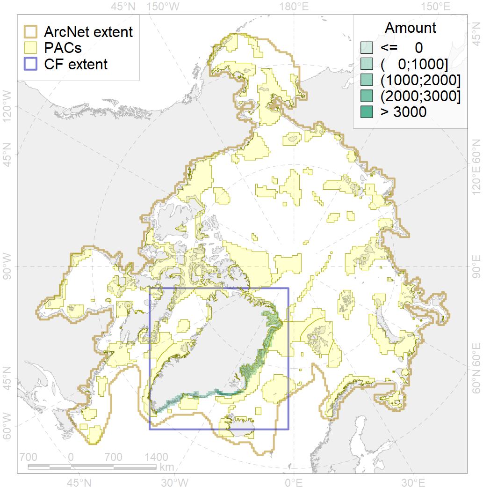
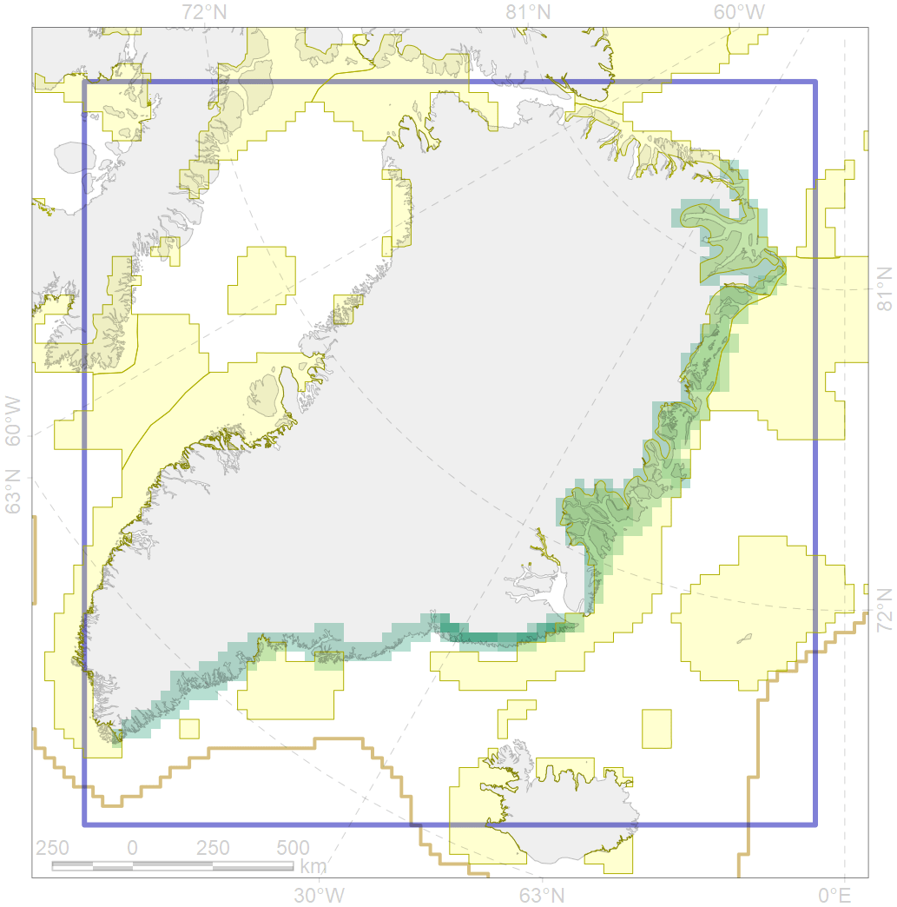

9024

| CF code | 9024 |
| CF name | polar bear denning areas of EG (East Greenland) subpopulation |
| Time Period | prior to 2008 |
| Source(s) | Born, 2008 |
| Seasonality | Oct-Apr |
| Depth Horizon | 0 |
| Methodology | Field data, expert opinion, simulation results. |
| Use Restrictions | Open access |
| Author Name | Evgeniya Melikhova, Stanislav Belikov |
| Notes | |
| Scenario’s Target | 0.648 |
| Target Achievement | 0.698 (Scenario: 107.8%) |
| PAC | Share of the Total Amount within the PAC | Share of the Target Achievement for the ArcNet | PAC’s Contribution to the Target Achievement |
|---|---|---|---|
| 29 | 1.4%5.1% | 2.2%7.8% | 2.1%7.2% |
| 32 | 50.4%56.9% | 76.6%85.3% | 71.1%79.1% |
| 33 | 11.7%14.7% | 18.0%22.6% | 16.7%21.0% |
| 42 | 1.7%2.2% | 1.6%1.6% | 1.5%1.5% |
| 44 | 0.0%0.0% | 0.0%0.0% | 0.0%0.0% |
| inner | 65.2%78.9% | 98.5%117.3% | 91.4%108.9% |
| outer | 34.8%52.7% | 9.3%36.0% | 8.6%33.4% |
| † supplement values are for area consistence whereas principal values are for Accenter compatible gridded stats |